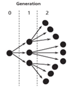

감염재생산지수 계산하기
코로나19에 효과적으로 대응하고자 방역 당국과 연구자들이 코로나19의 전파 양상을 분석한 결과가 뉴스에 종종 보도 되었는데 그 내용 중에 빠지지 않는 것이 감염재생산지수이다. 영어로는 reproduction number (\(\mathcal{R}\)) 로 불리는 데 한 명의 감염자로부터 야기된 후속 감염자의 수를 말한다. \(\mathcal{R}\)이 1을 넘으면 감염자의 규모가 시간이 지남에 따라 커질 것이고 1보다 작으면 규모가 감소할 것이다. 누가 누구를 감염시켰는지 모두 알고 있다면 감염자들의 수를 세서 \(\mathcal{R}\) 구할 수 있을 것이다. 하지만 한국 코로나 19 상황처럼 확진자가 많아서 모든 환자의 감염 경로를 알지 못하고 일별 확진자 자료를 가지고 있다면 어떻게 \(\mathcal{R}\)을 계산할까? 이 글에서는 이에 관해 살펴보고자 한다.
\(\mathcal{R}\)의 정의
위에서 언급한 것처럼 \(\mathcal{R}\)은 한 명의 감염자에서 야기되는 후속 감염자의 수를 의미한다. 감염을 야기한 사람을 먼저 왔다는 의미로 ‘선행 감염자’ (infector) 그리고 새로이 감염된 사람들을 후에 감염되었다는 의미로 ‘후속 감염자’ (infectee) 라 칭하겠다. 그렇다면 아래와 같은 식을 쓸 수 있을 것 같다. \[\mathcal{R} = \frac{새끼의 수}{어미의 수} =\frac{후속 감염자 수}{선행 감염자 수} = \frac{\textrm{number of infectee}}{\textrm{number of infector}}\]
\(\mathcal{R}\) 계산 방법
일별 확진자 자료를 이용하여 (\(\mathcal{R}\))을 구하는 방법을 알아보기 전에 감염 경로를 모두 아는 경우를 살펴보자. 예를 들어 아래 그림과 같이 감염병이 전파되고 있다고 생각해보자. 그림에서 점들은 사람을 나타내고 화살표는 감염이 일어난 방향을 나타낸다. 그리고 0, 1, 2는 세대를 나타내는데 0세대는 외부에서 유입된 최초 감염자를 나타낸다. 측 최초 감염자가 3명을 감염시켰고 후속 감염자들도 각각 3명을 감염시켰다.

2세대 이후의 상황은 모른다 가정하고 2세대까지만 계산에 넣으면 다음과 같이 계산할 수 있을 것이다. \(\mathcal{R}=12/4=3\). 감염이 계속 일어나 총 \(n\)명의 인구 집단이 모두 감염되었다면 \(\mathcal{R}\)은 얼마일까? 선행 감염자의 수는 최초의 유입된 감염자를 포함해서 \(n+1\) 그리고 후속 감염자의 수는 \(n\)이 될 것이다. 즉 \(\mathcal{R} = \frac{n}{n+1}\). 그리고 \(n\)이 큰 경우라면 \(\mathcal{R}\)은 1로 수렴할 것이다.
본론으로 들어가서 감염 경로는 모른채 일별 확진자수만을 가지고 \(\mathcal{R}\)을 어떻게 계산할까? 아래 그림을 살펴보자. 이 그림은 중국에서 처음 발견된 확진자 수를 나타내는 유행 곡선 (epidemic curve) 이다. 붉은막대는 발열자를 나타내는데 논의의 편의를 위해서 감염자 수라 가정해보자. 녹색 네모로 표시한 2월 17일에 감염된 사람들은 녹색 화살표로 나타낸 것처럼 2월 17 일 이전에 감염된 사람들에 의하여 감염되었을 것이다. 정확히 누구에게 혹은 몇 일에 감염된 사람으로부터 감염되었는지는 알 수 없지만 말이다. 그리고 한 가지 더 알 수 있는 것은 화살표의 두께로 표현한 것처럼 선행 감염자가 언제 감염되었는지에 따라 2월 17일에 후속 감염을 일으킬 수 있는 확률이 다를 수 있다는 사실이다. 달리 표현하면 감염 후 시간이 지남에 따라 후속 감염을 일으킬 수 있는 확률이 변하게 된다는 것을 의미한다.
감염 후 시간에 따라 후속 감염을 일으킬 수 있는 확률이 변할 수 있다는 것은 코로나19에 걸리게 되면 나타나는 일련의 인체 내에서의 변화 및 사람의 생활 습성등을 고려하면 어느 정도 이해할 수 있다. 바이러스에 감염되어 후속 감염자를 만들어 내기 위해서는 바이러스가 인체 내에서 증식해야 하므로 시간이 필요하다. 소위 잠재기 (latent period)가 필요하다. 이후 바이러스가 계속 증식하고 증가하고 감염 확률이 증가할 것이다. 이후 잠복기 (incubation period)를 거쳐 증상이 나타나고 회복기에 접어들면 감염 확률이 줄어들 것이다. 이런한 일련의 인체 반응에 더해 사람의 행동도 감염 확률에 영향을 미칠 것이다. 즉 몸에 바이러스가 아무리 많아도 아파서 타인을 만나지 않는다면 전파는 일어나지 않을 것이다.
감염 후 시간에 따라 후속 감염을 일으킬 확률은 세대기 (generation interval, generation time, or transmission interval)의 분포를 이용하면 표현이 가능하다. 세대기는 한 감염자가 후속 감염을 일으킬 때 까지 걸리는 시간이다. 코로나19의 세대기는 대체로 아래와 같은 분포를 가진다고 가정해 보자. 즉 감염됨 사람이 후속 감염을 일으키려면 감염 후 하루가 지나야 하고 6일 째가 되면 후속 감염을 일으키지 않는다고 가정해보자.
이걸 역으로 생각해보면 오늘 감염된 사람이 발견된 경우 이 사람을 감염시킨 선행 감염자는 2일-5일 전에 감염되었을 것이다. 이러한 세대기의 분포를 이용하면 \(\mathcal{R}\) 계산식에서 문제가 되었던 부분 즉 분모에 해당하는 선행 감염자 수를 계산해 볼 수 있다. 일별 감염자가 100명씩 열흘간 발생했다고 가정해보자. 감염자 수가 일정하게 유지되고 있으니 계산할 것도 없이 \(\mathcal{R}\)은 1일 것이다. 그래도 위의 논리를 이용하여 계산 하여 보자. 오늘 감염된 사람 100명이 후속 감염자가 되고 2일-5일 전에 감염된 사람이 선행 감염자가 된다. 주의할 점은 2일-5일 사이에 감염된 사람 중 위의 확률에 따라 일부만이 선행 감염자가 된다. \[\mathcal{R} = \frac{후속 감염자 수}{선행 감염자 수} = \frac{100}{100 \times 0.25 + 100 \times 0.35 + 100 \times 0.25 + 100 \times 0.15 } = 1\]